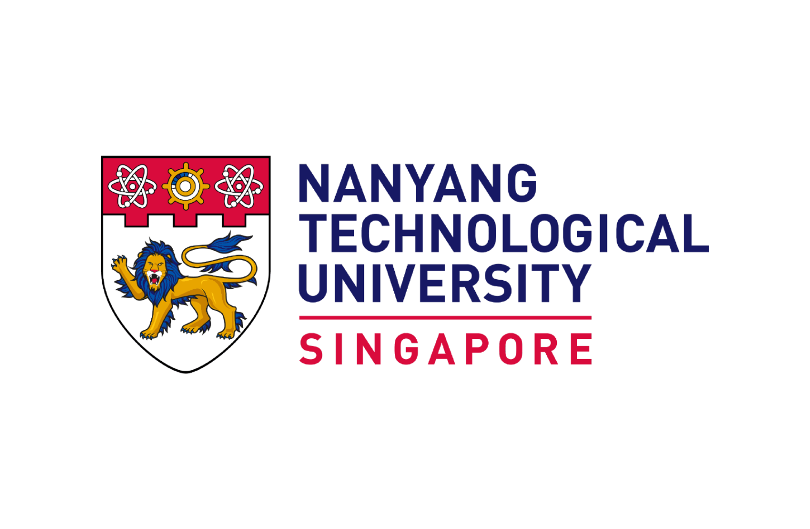

|
Sujong Lee I'm an undergraduate student at Nanyang Technological University (NTU), Singapore, pursuing B.Eng. in Electrical and Electronics Engineering with a Minor in Mathematics. I am also a researcher at Nanoforge AI. My research interests broadly lie in applied mathematics for machine learning. I am specifically interested in probabilistic inference, including generative model and Monte Carlo methods. Recently, I am working on developing a neural sampler with their connections to stochastic optimal control and optimal transport. |

|
Publications |
|
Neural Discrete Controlled Monte Carlo Samplers
Sujong Lee, P. Jutras-Dubé, B. Wen, R. Zhang Under Review, 2026 |
Research Interests |
|
Generative Modeling: Investigating the theoretical foundations and efficiency of Diffusion Models, Flow Models, and their connection to Optimal Transport and Stochastic Control. Neural Samplers: Developing advanced sampling techniques, particularly Monte Carlo Methods and their Neural Sampler approaches. AI4Science: Applying machine learning to Materials Discovery, including research on the application of neural samplers to facilitate scientific innovation, especially on Materials. |
Experiences |
|
AI Researcher Intern
NanoforgeAI, Korea Oct 2025 - Present Research on application of neural sampler on material discovery |
|
|
|
Research Intern
Purdue University (Remote) Jun 2025 - Present Supervisor: Ruqi Zhang Sampling problem in discrete domain. Discrete diffusion-based sampler using PIS-like loss with KL divergence minimization and terminal cost via discrete RND. |
|  |
Research Intern
ROSE Lab @ NTU, Singapore Jan 2025 - May 2025 Supervisor: Bihan Wen Generative AI empowered synthetic data/image generation. Accelerating inference speed in diffusion model via Hamilton-Jacobi regularization. |
|
URECA Research
NTU, Singapore Sep 2021 - Jun 2022 Supervisor: Donguk Nam Strain-engineered quantum device towards integrated quantum photonic chips. Comparative analysis on PLE spectrum of various semiconductors for photonic waveguide. |
|
Website template from Jon Barron. |